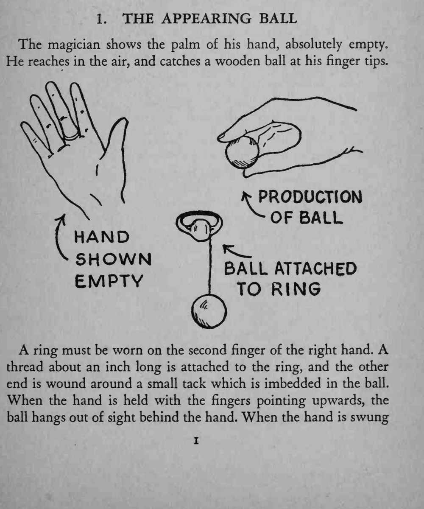

魔术师摊开空手，伸手向空中一抓，指尖上便凭空出现一颗木球。
成败全在线长与挥手的角度：线太短球藏不住，太长球弹不上指尖。

The magician shows the palm of his hand, absolutely empty. He reaches in the air, and catches a wooden ball at his ringer tips. A ring must be worn on the second finger of the right hand. A thread about an inch long is attached to the ring, and the other end is wound around a small tack which is imbedded in the ball. When the hand is held with the ringers pointing upwards, the ball hangs out of sight behind the hand. When the hand is swung upwards ana turned slightly forward, the ball will appear instantly at the finger tips.